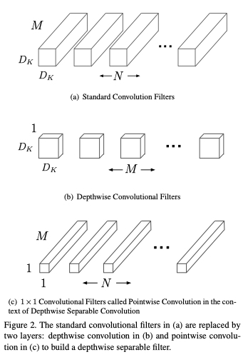
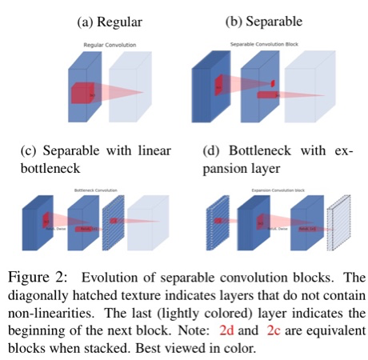
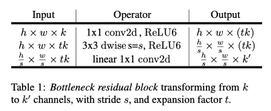
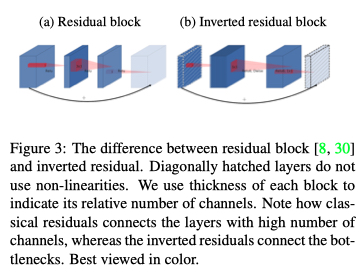

Mobile Net
Keypoints:
- 将标准的卷积操作拆分成了Depthwise Convolution和Pointwise Convolution
- 总结了神经网络宽度变化$\alpha$以及分辨率变化$\rho$对准确率的影响。此处暂且不讨论。
卷积拆分
模型size和计算量对比
| Standard Convolution | Depthwise Convolution | Pointwise Convolution | |
|---|---|---|---|
| Kernel Size | $D_K\times D_K\times M\times N$ | $D_K\times D_K \times M$ | $M\times N$ |
| Computation Cost | $D_K\cdot D_K\cdot M\cdot N\cdot D_F\cdot D_F$ | $D_K\cdot D_K\cdot M\cdot D_F\cdot D_F$ | $M\cdot N\cdot D_F\cdot D_F$ |
| Ratio/standard | 1 | $\frac{1}{N}$ | $\frac{1}{D_K^2}$ |
相关公式:
Standard Convolution:
$\mathbf{G}{k, l, n}=\sum{i, j, m} \mathbf{K}{i, j, m, n} \cdot \mathbf{F}{k+i-1, l+j-1, m}$
Depthwise convolution:
$$\hat{\mathbf{G}}{k,j,m}=\sum{i,j}\hat{\mathbf{K}}{i,j,m}\mathbf{F}{k+i-1,l+j-1,m} $$
Pointwise convolution(1x1 Convolution):
$\mathbf{G}{k,l,n}=\sum{m} \hat{\mathbf{G}}{k,l,m}\mathbf{K}{m,n}$
Combination:
$\begin{aligned}
&\mathbf{G}{k, l, n}=\sum{m}\left(\sum{i=1} \hat{\mathbf{K}}{i, j, m} \cdot \mathbf{F}{k+i-1,l+j-1,m}\right) \mathbf{K}{m, n}\
&=\sum{m} \sum{i,j}\left(\hat{\mathbf{K}}{i,j,m} \mathbf{K}{m, n}\right) \mathbf{F}_{k+i+1, l+j-1, m}
\end{aligned}$
理解：将Standard Convolution拆开实际上是一种解耦，认为使用
$\mathbf{K}{i,j,m,n}=K(i,j,m,n)->K(i,j,m)\cdot K(m,n)=K{i,j,m}\cdot K_{m,n}$

关于模型的具体结构：
此处在Depthwise Conv和1x1 Conv后面添加了BN和ReLU，但在公式的拆分中没有体现，值得思考为何Depthwise之后也需要添加BN和ReLU。

MobileNet2
MobileNetV2在V1的基础上进行了改进，主要提出了两种新的结构：Linear Bottlenecks, Invert Residuals.
Linear Bottlenecks
首先注意到2个性质:
If the manifold of interest remains non-zero volume after ReLU transformation, it corresponds to a linear transformation. ReLU(x) = x, x>0
当值大于0时，ReLU相当于线性
ReLU is capable of preserving complete information about the input manifold, but only if the input manifold lies in a low-dimensional subspace of the input space.
当输入维度比较低的时候，ReLU可以保留较为完整的信息
据此，在原先的结构中添加一层Linear Bottlenecks层: 将维度先压缩，然后再通过ReLU，再使用1x1卷积增维, 如下图所示。

模型结构:

Inverted Residuals
在bottleneck处进行skip connection，内存消耗小，且在该论文的实验中效果稍好。
